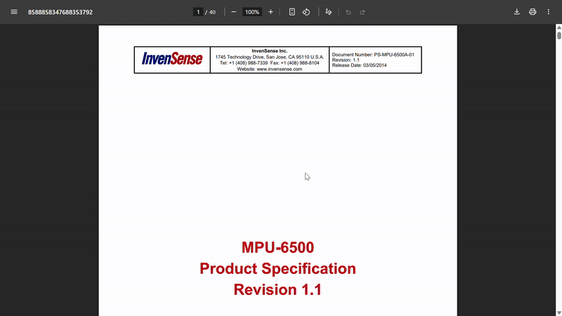
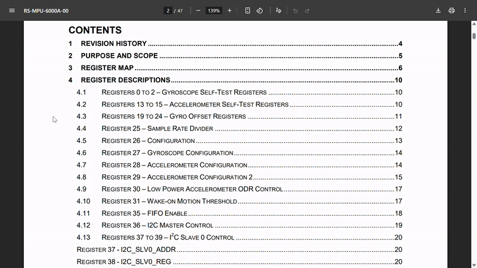

When you're using I2C, each device has an address. This is so the microcontroller knows where to send and receive the information (I wouldn't want to pull data from the screen and send it to the sensor).
To check your components' addresses, go to their datasheet and ctrl-f "address". My MPU-6500 has a default address of 1101000, which is [0x68] in hex (that's what Arduino and C++ use).

You'll also probably see a method to set a different address. This is to make sure that, in case two components have the same default address, you can change one. On the MPU-6500, if you send voltage to the AD0 pin (that's the AD0 = 1), you'll get an address of 1101001 ([0x69] in hex).
#include <Wire.h>
#define MPU_ADDR 0x68
#define OLED_ADDR 0x3C
There's a couple of new things you need to know about coding with I2C in Arduino. (If you haven't already, set up the XIAO RP2040 board in the Arduino IDE here).
Wire.h is the Arduino library for I2C, and it's how we'll be reading and writing data from the sensor to another display.
Before you can communicate with any I2C devices, you need to initialize the Wire library with Wire.begin().
The XIAO RP2040 uses pins A4 (SDA) and A5 (SCL) for I2C communication by default. Wire.begin() sets these up automatically.
void setup() {
Serial.begin(9600);
Wire.begin();
}
Wire.beginTransmission(MPU_ADDR);
Wire.write(0x43);
Wire.endTransmission(false);
Just like digitalRead and digitalWrite read and write values from inputs and outputs, we can use Wire.read() and Wire.write(value) to receive and send data from components.
But before you do that, you have to do Wire.beginTransmission(address), and if you want to switch the device the microcontroller is communicating with, you have to do Wire.endTransmission() and then Wire.beginTransmission(address2)
Most I2C sensors need to be "woken up" and configured before they start sending data. This is usually by writing a hex value to a certain register (mini I2C address).
Ctrl-f "Sleep Mode" or "Power Management" in your datasheet to find the right register. For the MPU-6500 the register is [0x6B], but every sensor is different.
Some sensors have a separate "Register Map" document, so if your datasheet doesn't have a register map in it, Google [sensor name] + "register map"
Sensor registers are addresses you use to get data and interact with the sensor's specific functions (like sleep and calibration). Not to be confused with I2C addresses, which are assigned to the entire sensor.
According to my sensor's register map doc, we need to write [0x00] to register [0x6B] (PWR_MGMT_1) to wake it up.
void initMPU() {
Wire.beginTransmission(MPU_ADDR);
Wire.write(0x6B); //sleep mode address
Wire.write(0x00); //hex to start sensor
Wire.write(0x1B); //calibration address
Wire.write(0x00); //hex for +/- 250 range
Wire.endTransmission();
}
OPTIONAL: Looking through the register map, I can also configure the gyroscope sensitivity. Register [0x1B] controls the range - [0x00] gives us ±250 degrees per second, which probably good for now. Calibration can be fine-tuned when you get your PCB in-person.
Ctrl-f "Calibration" or read through the register on the doc to find out if/how you can calibrate your sensor.
Why did we call Wire.write() twice? In I2C, you need to specify the sensor's address (beginTransmission), process your message (Wire.write), and then decide whether to send it now or keep writing more (endTransmission true/false).
Wire.beginTransmission(MPU_ADDR);
Wire.write(0x6B); //register
Wire.write(0x00); //value to write
Wire.endTransmission(); //end communication
//send and close
Wire.endTransmission(); //same as true
//keep connection open
Wire.endTransmission(false);
endTransmission() has a hidden parameter that defaults to true. This parameter controls whether to send a "stop condition" on the I2C bus.
endTransmission(true): "I'm done talking." Use this when you don't need to talk to that register anymore--like when you've initialized your sensor.
endTransmission(false): "I wanna say more." Use this before requestFrom() so you can immediately read data from the same register you just pointed to.
Now the fun part, getting data. Sensors output their data on registers, which are like mini I2C addresses. You can read different registers to get different information. Remember: both I2C addresses and registers are hexadecimal.
Read through your register map and search for output registers. Looking at the register map, the MPU-6500 stores gyro data on registers [0x43]-[0x48].

void readGyro() {
Wire.beginTransmission(MPU_ADDR);
Wire.write(0x43); //GYRO_XOUT_H
Wire.endTransmission(false);
//request 6 bytes (1 per register)
Wire.requestFrom(MPU_ADDR, 6);
To read info from a register that gives you data, you need to do Wire.write(register1), send that to the sensor, then do Wire.requestFrom(I2C_ADDR, NUM_BYTES, true) to request data from that register (and any more that you may need). Since my gyroscope is 3 axes and each axis has two registers each, I need to request 6 bytes. If your sensor only outputs data using 2 registers, then NUM_BYTES = 2.
Sensors send data in bytes (8 bits each), but gyroscope values are 16-bit numbers. The sensor splits each reading into two bytes - a "high byte" and a "low byte".
Doing Wire.write([0x43]) then doing endTransmission(false), and calling requestFrom(MPU_ADDR, 6, true), tells the sensor to start at [0x43], restart to start reading data, and then read the next 6 registers (one byte per register).
The MPU-6500 stores gyroscope data in registers [0x43] to [0x48]. Each axis (X, Y, Z) uses two bytes (high and low).
To read data, we point to the starting register, then request multiple bytes. That's why we did Wire.write (point) then Wire.requestFrom (requesting bytes).
int16_t gyroX, gyroY, gyroZ;
gyroX = (Wire.read() << 8) | Wire.read();
gyroY = (Wire.read() << 8) | Wire.read();
gyroZ = (Wire.read() << 8) | Wire.read();
}
When the sensor sends you two bytes, they look like this:
High Byte = 0b11010110 (214 in decimal)
Low Byte = 0b10001100 (140 in decimal)
But we need them as ONE 16-bit number: 0b1101011010001100
Step 1 - Left Shift (<<) Move high byte 8 positions left
11010110 << 8=1101011000000000
(Added 8 zeros to the right)
Step 2 - OR Operation (|): Combine with low byte
1101011000000000 (high << 8)
|
0000000010001100 (low)
=
1101011010001100
OR combines bits: if EITHER position has a 1, the result has a 1. Since high and low bytes occupy different positions, they merge perfectly!
float rotationZ = 0;
unsigned long lastTime = 0;
void loop() {
readGyro();
//converting to degrees/second
float gyroRate = gyroZ / 131.0;
//calculating time elapsed
unsigned long now = millis();
float dt = (now - lastTime) / 1000.0;
//math to get total rotation
rotationZ += gyroRate * dt;
displayRotation(rotationZ);
lastTime = now;
delay(10);
}
In your loop(), call your readSensor() function and have a small delay. Mine has some math so I can calculate rotation and display it on my OLED display.
Let's go through a checklist and make sure we have everything.
1. Include Wire.h and declare sensor's I2C address
2. In setup(), begin Wire and serial
3. Wake up sensor
4. OPTIONAL: Calibrate sensor
5. In sensorRead(), use Wire.write and Wire.requestFrom to get data in byte format
6. Use bit-shifting to convert 8-bit format to 16-bit format
7. Call sensorRead() in loop()
8. OPTIONAL: Display data on screen
Congrats! You've officially made your Hermes! You've just built an insanely technical piece of machinery, give yourself a pat on the back. If you're unsure about any of the firmware you wrote, shoot a message in #pathfinder or in #hardware! Also make sure to check out the Hermes git repo to see all the code put together!
Otherwise, if you're done, then head on over to the submission page!